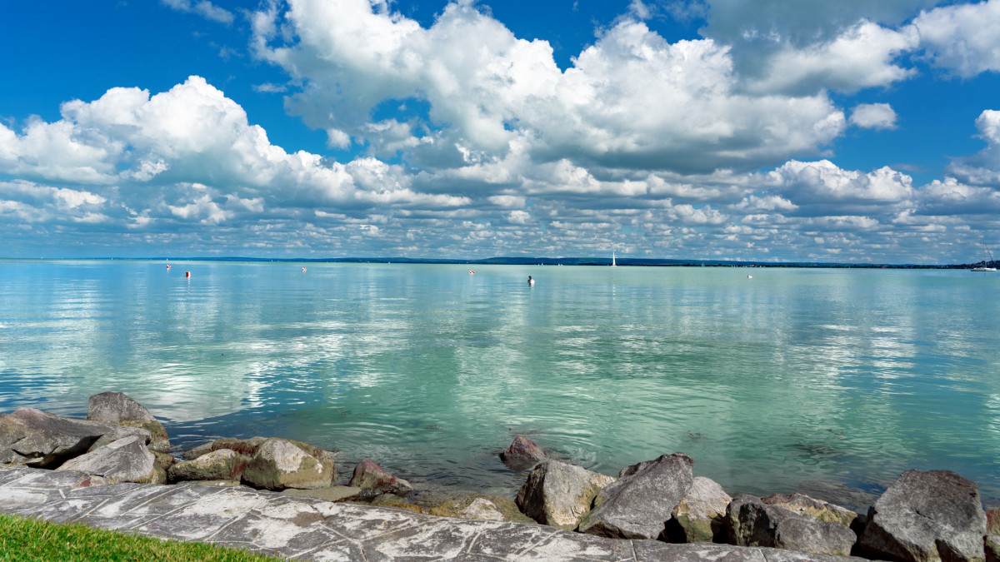
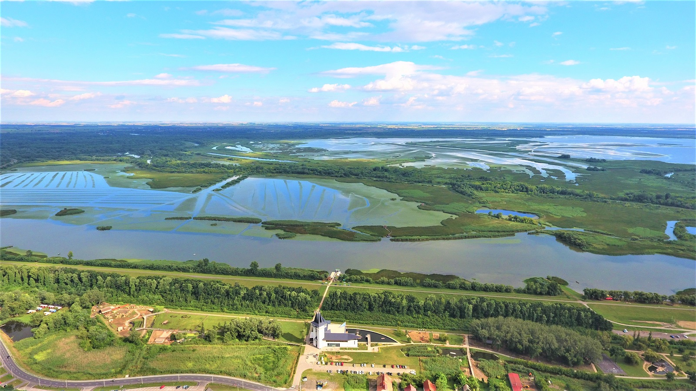

Balaton
Típusa geológiailag a Velencei-tóhoz hasonlóan tektonikus eredetű, sekély vizű ároktó. 77 km hosszú, legkisebb szélessége Tihanynál 1,3 km, legnagyobb 12,7 km Balatonvilágos és Balatonalmádi között, átlagos szélessége 7,7 km, felülete 600 km². Legmélyebb pontja a Tihanyi-szoros legmélyebb árkában az úgynevezett a „Tihanyi-kút”, ahol a tó medre 11-12,5 méter mélyen van. Más forrás szerint a kút mélysége 10,67 méter. A Szántód-Tihany kompjárat útvonalától mintegy 100-150 méterre keletre, a parttól körülbelül 300 méterre van.Az 59 800 hektár területen fekvő vizes élőhely keleti medencéjét a Tihanyi-félsziget választja el a tó többi részétől. Déli partjánál medre sekélyebb. Északi oldalán található a badacsonyi borvidék és a Tapolcai-medence, jellegzetes vulkáni tanúhegyeivel. A Balaton és környéke Budapest mellett az ország turisztikailag leglátogatottabb területe, 2004-ben elnyerte az Örökségünk – Somogyország Kincse címet is. Környékén gyógyfürdők, termálforrások találhatók. A „Balaton fővárosa” címet hivatalosan Keszthely viseli, de Siófok a déli part, Balatonfüred pedig az északi part fővárosaként tekint magára. A tó környékét a közigazgatási széttagoltság jellemzi, mert három megyéhez, három tervezési-statisztikai régióhoz tartozik.
Tisza-tó
Az Alföld északi részén, Heves megye délkeleti szélén, Borsod-Abaúj-Zemplén, Heves és Jász-Nagykun-Szolnok megye határán fekszik. Területe 127 km², melyen mozaikosan váltakoznak a nyílt vízfelületek, szigetek, holtágak, sekély csatornák. Hossza 27 kilométer, átlagos mélysége 1,3 méter; a legmélyebb pontján azonban 17 méter mély. 43 km²-nyi sziget található benne. A Tisza-tó közúti megközelítése tulajdonképpen nem egyszerű, mert a térségében húzódó főutak jobbára messze elkerülik; ez alól az egyetlen kivétel a 33-as főút, mely nemcsak, hogy érinti, de keresztül is szeli a tavat, Poroszló és Tiszafüred között. A tó bal partján fekvő települések között a Tiszaroff-Tiszafüred közti 3216-os húzódik végig, a jobb part községeit a 3213-as út köti össze; a tó északi oldalán fekvő települések megközelítési és összekötő útjai a 3301-es és a 3302-es utak, a két part közti átjárást pedig a 33-as főúton felül még egy út biztosítja: ez a 3209-es, mely Kiskörénél szeli át a Tiszát.
Szelidi-tó

Szelid neve a közeli Várdomb erõdítményével és a török idõk harcaival függhet össze, ugyanis a török csapatok a magyar túlerõt látva, megállásra és kompromisszumokra kényszerültek "megszelidültek" ezen a területen. A tavat a még a Duna vize mélyített ki évezredekkel ezelõtt. Jelenleg 4km hosszú, szélessége átlagosan 150-200m között mozog, átlagos vízmélysége 3-4 méter, vize nyáron akár 28°C-ra is felmelegedhet, így fürdõzésre kiválóan alkalmas. A talajból sok nátrium-magnézium-karbonát és nátrium-jodid oldódik ki, ezért már a középkorban sebgyógyításra használták, ma inkább idegrendszeri, hormonális és reumatikus bántalmak kezelésére ajánlják. Vize szagtalan a gyógyfürdõkkel ellentétben, jelenleg még nem minõsített gyógyvíz, ezért üdülõfalu létesült a környezetében. Egy másik legenda szerint Bence vitéz úgy meghajszolta lovait hogy azok patái elvástak. De miután a lovak hosszasan a tó vizében állva ittak sebeik gyorsan rendbe jöttek. Szeliden 2000-ben újították fel a Kastély Szállót, a jövõbeni tervek szerint gyógykezelésekre alkalmas létesítményeket is létrehoznak benne. A kastély egykoriban a kalocsai érsek pihenõ kastélya volt.